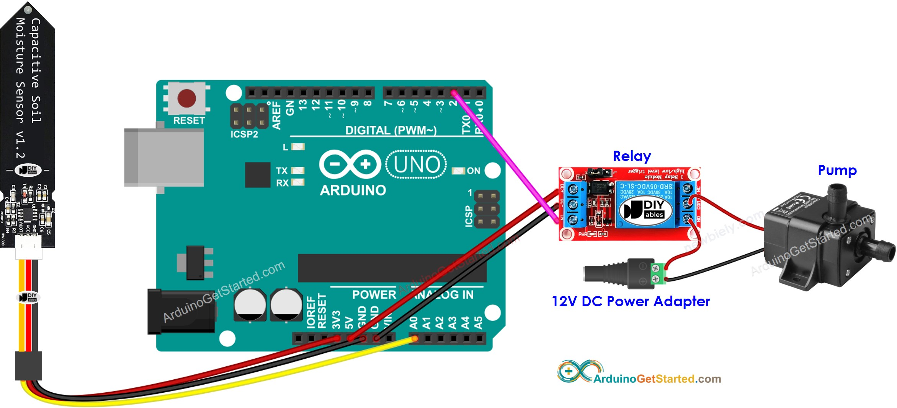

Arduino watering system
Posted by Dobbenberg, Wouter on 2024-08-15
A while ago, I set out to prevent my plants from dying due to overwatering or underwatering. To solve this, I decided to try using Arduino to create a fully automated plant watering system.
The Concept
The concept was straightforward: I wanted an automatic watering system for my plants that I could control via my mobile phone or browser. To achieve this, I needed both a web service and a Wi-Fi controllable Arduino board. I wanted the system to run on direct electricity through a power cable and be stationed outside in my garden. To protect the electronics from rain, I built a small casing to keep everything dry.Additionally, I aimed to gather data to optimize the watering schedule, including humidity, temperature, and light levels. The water level of the plants was measured using a moisture sensor. Below is a simple representation of the setup, showing the pump, Arduino, and moisture sensor:

Building the setup was a lot of fun and quite the learning experience. Here are two images of the completed product:


Some Problems
During the initial tests, I encountered a few issues, mainly with the pump I used. I initially opted for a submersible pump, but it quickly started failing. It also leaked lubricant into the water supply, which isn’t great for plants. To fix this, I switched to a 12v membrane pump instead of the 5v submersible one. A membrane pump has no submerged components, making it safer for both plants and humans. I also upgraded to a corrosion-resistant moisture sensor to prevent any potential harm to the plants.Results & Future
With the modifications in place, I ran the watering system for one summer, collecting data via an Arduino cloud service called Blynk.Unfortunately, I no longer have the code or data stored on my devices, but I plan to continue this project in the future. I want to expand and make it more robust. Some ideas include supporting more plants and making the system more compact by designing my own PCB. I’m also considering using a more powerful pump or leveraging the native water pressure from the tap.